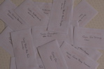
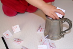
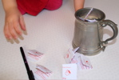
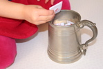
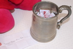

Merry Christmas
Sunday, 23 December 2007
What do you get if you cross a vampire and a snowman?
Frost Bite.
Merry Christmas and a prosperous New Year
from The Tempest Twins Fan site.
Smile and the world smiles with you.
Sunday, 23 December 2007
Welcome to the Vampirate fans from Mexico, France, Cocos (Keeling) Islands and Tuvalu (a Polynesian Island). Also a thank you to those from the Argentina, Armenia, Australia, Austria, Brazil, Canada, China, Czech Republic, Denmark, Germany, India, Ireland, Israel, Italy, Japan, Luxembourg, Netherlands, New Zealand (Aotearoa), Poland, Portugal, Romania, Singapore, Slovak Republic, Spain, Sweden, Thailand, Tonga, Ukraine, United Kingdom and of course the United States (Commercial, Educational and at home) who have visited us in the past.
Welcome World
Thursday, 06 December 2007
Welcome to the Vampirate fans from Spain, Singapore, Italy, India, Thailand, China, Portugal, Armenia, Ukraine and New Zealand (Aotearoa) and Czech Republic. Also a thank you to those from the Argentina, Australia, Austria, Brazil, Canada, Denmark, Germany, Ireland, Israel, Japan, Luxembourg, Netherlands, Poland, Romania, Slovak Republic, Sweden, Tonga, United Kingdom and of course the United States (Commercial, Educational and at home) who have visited us in the past.
Competition Winner
Monday, 03 December 2007
Our competition winner is Sailor Black Anne Read, Well done. Thank you everyone who contributed. I tried to do it as randomly as possible, all entries were on the same size paper, folded in the same way and then my almost three year old pinkie, Swabbie Calico Bess Flint, mixed them up, put them in the tankard and then picked one out.

Competition
Tuesday, 27 November 2007
Only a couple of days left. At the moment we have four different pirates entering our competition, (Cabin Girl please contact me again). The competition is for an inscribed and signed copy of Blood Captain (The ride is far from over!). If that does not tickle your fancy you can trade it for an inscribed and signed copy of Dead Deep (Beware the fishtails!) or a postcard of Lorcan Furey.
New Crew Member
Monday, 26 November 2007
From Notorious Black Bart's Daughter
Message: Hello, I had come across you on the Nocturn website and am very impress of your work on the site. I'd love to be one of the crew!! I havent decided on a name yet but ill let you know when i have. ... Your website is fab and i'll contact soon Ta ta!!
Since then she has come up with a name and several other pieces for this site.
All Change
Thursday, 22 November 2007
I have now finished going through both the blogs Justin Somper wrote and books 1 and 1½. Then I looked at how many items there are on the left hand side and decided to rationalise them. So things like the Favourite Characters page have moved to under Characters.
New Crew Member
Monday, 19 November 2007
I would like to introduce our latest recruit, Sailor Black Anne Read who wrote:
"I cant wait to read the next book, The Tide of terror."
The rest of her email can be read under two new pages - Favourites and Film or TV.
Square Pictures
Sunday, 18 November 2007
I hope you like the new square pictures I have just added. You may have noticed several are also buttons with links to other pages.
So Which Country Next?
Tuesday, 13 November 2007
Welcome to the Vampirate fans from Brazil and Israel. Also a thank you to those from the Argentina, Australia, Austria, Canada, Denmark, Germany, Ireland, Japan, Luxembourg, Netherlands, Poland, Romania, Slovak Republic, Sweden, Tonga, United Kingdom and of course the United States (Commercial, Educational and at home) who have visited us in the past.
New Crew Member
Tuesday, 13 November 2007
From our newest member of the crew - Cabin Girl
"I love the books and the the latest, Blood Captain, has left me crying out for more news about the twins and their adventures!"
Snakehead
Friday, 02 November 2007
Updates have been put on hold as the latest Alex Rider novel has just been handed to me by the postman. Back in under a week, I hope. But that should not stop you sending in entries to the competition or comments to the website, I still will check my emails once a day.
Visitors From Around The World
Friday, 02 November 2007
Welcome to the Vampirate fans from Austria, Argentina, Poland, Slovak Republic and Netherlands. Also a thank you to those from the Australia, Canada, Denmark, Germany, Ireland, Japan, Luxembourg, Romania, Sweden, Tonga, United Kingdom and of course the United States (Commercial, Educational and at home) who have visited us in the past. I am still sorry to say the frappr map is still not working and I am thinking of loosing it.
Competition Time
Wednesday, 31 October 2007
We have very little crew here to set sail, so to give you lot an incentive to contribute to this website, I have been bidding on ebay and won a signed Blood Captain. So competition time, I will send out the copy of Blood Captain to someone (at random) who joins our crew by sending in an article, which I publish on this website, with their character name and email address.
I am willing to put up to seven entries into the tankard, per crew member, one for the different sections of the website:
- News / Stories
- Your Ideas
- Lookalikes
- Dirty Dolphin
- Book Reviews
- Favourite Characters (including why)
- Prof reading the site and finding real errors.
Closing date is the 30th November so you should get the book by Christmas, where ever in the world you are. I will email you if you are the winner asking for your name and address.
If you are under sixteen please get a parents or guardians permission before sending anything in to any website, especially pictures.
Maps
Monday, 29 October 2007
I have just got a reply about the map.
Platial has just taken over frappr, but we don't yet have control of the frappr database or hardware. We are trying to get in there as quickly as possible so we can solve the problems being reported.
It is very unlikely that the map members have really been lost. Real lost data is a serious issue and even though we have not yet gotten access to the frappr back end, I am sure that they have the usual safeguards in place and that we will soon be able to recover your members.
Thanks for your patience.
Apologies
Wednesday, 24 October 2007
Apologies to those who have put a pin in the frappr map. It seems to have got upset and thrown all the pins out. I don't even seem to keep mine in. I am working on it.
Mice
Tuesday, 23 October 2007
As I am the Ships Mouse here are some mouse facts. A baby mouse is called a pinky, the female is a doe and the male is a buck.
I love emails
Tuesday, 23 October 2007
I passed on some photos taken at the show in Windsor and got a reply.
Belated thanks for these. And also for my tankard which I shall be using at future events! Hope all's well with you. Trust the tide! Justin Somper
Screen Dimensions
Saturday, 20 October 2007
I asked a friend who is a tester her views, as I know she will tell me straight, what she does not like. I hope you agree that I have fixed the problems listed below. Any others you spot please email me via the squeak page.
"here's tester speaking

Launched in IE, first page fits nicely full screen
When there is space assigned for left hand menu, title gif Vampirates looks out of centre somehow.
Just a thought but it may help if you reduce width of the menu - you only need it as wide as the longest text"
Our Visitors Update
Tuesday, 16 October 2007
Welcome to the Vampirate fans from , Warwick and Finleyvile. Also a thank you to those from the Australia, Canada, Denmark, Germany, Ireland, Japan, Luxembourg, Romania, Sweden, Tonga, United Kingdom and of course the United States (Commercial, Educational and at home) who have visited us in the past. It is lovely to now see pins in the map and people starting to use the site, thank you folks.
Sorry
Wednesday, 10 October 2007
Sorry the person from Finleyvile USA, I seem to have lost you off the map. Please add yourself again. Sorry.
Main Header Logo
Tuesday, 09 October 2007
I have not been happy with the main header logo for a while. White on black, on a white background looked very amateur and pasted. I have now come up with a new one. I hope you guys like it.
Maps And Pins
Monday, 08 October 2007
Welcome to the Vampirate fans from Ireland, Birmingham and Finleyvile. Also a thank you to those from the Australia, Canada, Denmark, Germany, Japan, Luxembourg, Romania, Sweden, Tonga, United Kingdom and of course the US who have visited us in the past. It is lovely to now see pins in the map and people starting to use the site, thank you folks.
Where do we all come from?
Thursday, 04 October 2007
Come and stick a pin in the 'Where Are You' page. Then you will see where everyone comes from, at the same time.
Dressing Up
Wednesday, 03 October 2007
I love dressing up, and I really did enjoy doing the lookalike pages. My husband got me to dress us as Ma Kettle again today to he could do a page for our family website, called "How Nuts Is Your Mum."
The World Grows Smaller By The Day.
Wednesday, 03 October 2007
Welcome to the Vampirate fans from Denmark and Romania, and a thank you to those from the United Kingdom, US, Luxembourg, Germany, Australia, Canada, Tonga, Japan and Sweden who have visited us in the past. We must be starting to be visible to everyone now.
Pirate School
Friday, 28 September 2007
I was helping at school today and googled for this site. It came up. To begin with one of the teachers said she thought it might be blocked. But I got access to it.
Characters
Thursday, 27 September 2007
The updates to the characters page and timeline as slow going at the moment, as I am trying to sew pirate flags on my Ma Kettle costume. The one on the back took way longer than the time I have spent on some of these pages. I hope it looks worth it on Saturday.
THANKS
Monday, 24 September 2007
I got my first message through the squeak page, and it was from the Captain. I am bouncing, and very happy here. Here it is:
Monday, September 24, 2007 at 17:08:37, The Captain, THANKS
Hi! This is Justin Somper writing to say thanks for creating a wonderful site. I've just found it and was really delighted and impressed with how much you have up so speedily. I'm just kicking off a national tour to introduce readers around the UK to BLOOD CAPTAIN. I'm also busily drafting ideas for the fourth book - as yet unnamed - which I will start writing in earnest on my return. Trust the tide!
Justin Somper
Hello World
Sunday, 23 September 2007
Welcome to everyone who has visited this site. So far we have United Kingdom, Network, US Commercial, Old style Arpanet (arpa), Luxembourg, Canada, Germany, Australia, Tonga, Japan and Sweden. Keep it up.
The Nocturn
Saturday, 22 September 2007
Yippee I got a message back on the nocturn's message board.
"thenocturn (OFFLINE): Ship's Mouse, thankyou for the news. I wasn't aware of that myself. And can I say that your site is amazing. Far better than mine. I just hope people still like it here and don't all jump ship to your site. lol."
Google's Found Us
Tuesday, 18 September 2007
I am very happy here. Google has found two pages from the Tempest Twins website, the Dirty Dolphin and Our Crew. I have just types in Tempest Twins and pressed uk and we are second. Yipee, I am bouncing here. Just for the record so has MSN. Ok little things please little minds but it has made my day, people can find me.
The Pirate Lady
Monday, 17 September 2007
There are some wonderful people on the web. Here is just one.
"You've a wonderful website and I shall add a link at the end of my review so readers will know about Tempest Twins. I've another of the Vampirate books to review, but there are several other pirate books ahead of it.
Thanks for the link! Have a wonderful day.
"
Her link can be found with the other pirating links and well worth a look.
Pirates and Privateers
This website includes Pirate articles, links, book reviews and more.
Blog Time
Sunday, 16 September 2007
A friend told me the reason why although I have told Google about this site, Google's googlebot has crawled us, they will not list us is:
"There's a ~6-month spell called the 'Google Sandbox', in which it's disproportionately unlikely that you'll appear in search results. When you have some respectable inbound links, the site will be increasingly visible to the search community.
Try finding blogs on related topics and leaving helpful comments, leaving your URL -- that will lead to both curious (and relevant) visitors, and on-topic (and therefore Google-strength-enhancing) backlinks."
So here is a blog to try and get us noticed. I hope you like it, I will try to update it monthly with anything Vampirate esk that I or you lot find.
Praise
Tuesday, 11 September 2007
A friend read my website and sent me an email. I am so happy, I created a praise page so I could share it with everyone. No one is willing to use the Squeak page yet. I had to check again that it worked.
"Well done! What an accomplishment! I loved it all and found your explanation of how you got started reading the series very interesting. I'm sure it will be an encouragement to anyone who has struggled with reading.
I have one little titbit of info for you. I noticed in your character section that you were wondering about the origin of the name Jez. Well, it's short for Jeremy (who knows why!), which means God's appointed one."
Ready For The Internet
Friday, 07 September 2007
Tempest Twins Website goes live. I did it I promised myself that it had to be up by Friday and with my hubbies help I managed to get it up.
Dressing Up Time
Wednesday, 05 September 2007
After school, my kids and I got all dressed up and went round to a friends house with accessories and a camera to get some photos for the Look alikes pages. My son's best mate's family were willing to have a laugh too so loads of photos were taken. My Blood Captain square had to have the replica sword held with both hands as it is heavy. Just watching the kids playing pirates with it and a plastic sword was hilarious. That and arguing on who would have the map and tankard made a fun afternoon.
Domain Name
Wednesday, 05 September 2007
I got it the domain name I wanted. See here it www.tempesttwins.co.uk. I hope it is catchy enough for people to remember it and be able to spell it.